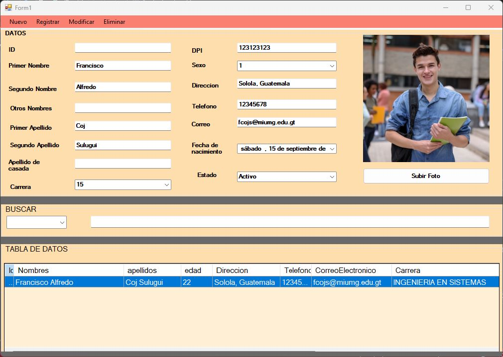
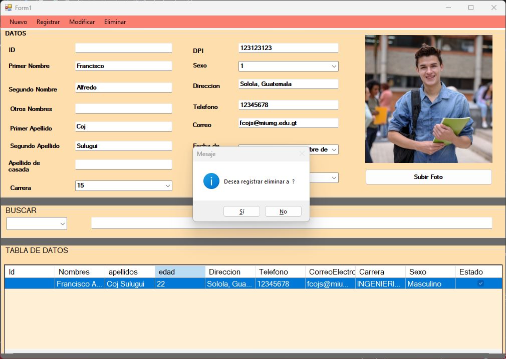

Sistema de Inscipcion de Alumnos
Este proyecto es una aplicación de escritorio desarrollada en el entorno de desarrollo Microsoft Visual Studio. Esta aplicación
permite a una institución educativa gestionar el proceso de inscripción de alumnos de manera
eficiente, utilizando una interfaz gráfica de usuario (GUI) desarrollada con Windows Forms y
una base de datos SQL Server para almacenar y administrar la información relacionada con los
alumnos y los cursos.


Caracteristicas :
- Registro de Alumnos: El sistema permite ingresar y almacenar información relevante de los alumnos,
como nombres, apellidos, fecha de nacimiento, dirección, número de teléfono, correo electrónico,
entre otros.
- Almacenamiento de Datos: La información de inscripción de alumnos,
cursos y otros datos relacionados se almacena en la base de datos.
- Consulta y Búsqueda: Los administradores pueden buscar y consultar información de alumnos y cursos
utilizando criterios de búsqueda, lo que facilita la recuperación de datos específicos.
- Eliminación de Alumnos: Los administradores tienen la capacidad de eliminar registros de alumnos cuando sea necesario.
Esta función garantiza que la información de alumnos sea actualizada y precisa.
Tecnologias Usadas
- C#: Lenguaje de programación principal para el desarrollo de esta aplicación
- C#: Lenguaje de programación principal para el desarrollo de esta aplicación
- SQL: Server: Base de datos para el almacenamiento de datos.
- Windows Forms: Para crear la interfaz gráfica de usuario.
- Entity Framework (opcional): Para facilitar la interacción con la base de datos.
Este proyecto proporciona una solución completa y eficiente para la gestión de inscripciones en una
institución educativa, permitiendo a los administradores mantener un registro organizado
de los alumnos y los cursos de manera centralizada, incluida la capacidad de eliminar
registros de alumnos cuando sea necesario.